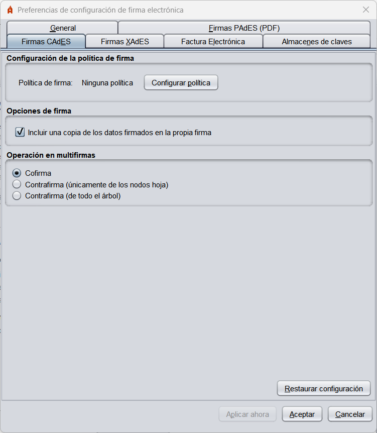

Menú Preferencias
Para configurar las firmas generadas por la herramienta, acceda al menú de configuración a través de la
opción "Opciones" -> "Preferencias" en la barra de menús de la aplicación. Desde este menú
puede configurar el comportamiento general de la aplicación y las firmas generadas para cada tipo de formato.
Si pulsa en el botón "Cancelar" desde cualquier de las pestañas del menú, se cerrará este ignorando
cualquier cambio realizado; si se pulsa el botón "Aceptar" se cerrará el menú dejando configuradas
las opciones definidas en el menú y si se pulsa el botón "Aplicar ahora", se aplicarán los cambios
realizados sin cerrar el menú.
Menú "General"

- Algoritmo de firma: Algoritmo de firma por defecto que utiliza la aplicación para generar las firmas electrónicas.
- Preferencias generales:
- No pedir confirmación al cerrar la aplicación: Permite salir de la aplicación sin confirmación del usuario.
Menú "Firmas PAdES (PDF)"

- Política de firma: Permite declarar la política de firma que se sigue en las firmas PAdES;
- Ninguna política: La firmas de PDF generadas no declararán política de firma.
- Política de firma de la AGE 1.9: Se declara la política de firma de la AGE v1.9.
- Política a medida: Permite configurar manualmente cada una de las propiedades de la política.
- Identificador de la política.
- Huella digital del identificador de la política.
- Algoritmo de huella digital del identificador de la política.
- Calificador de la política
- Metadatos de las firmas PAdES:
- Razón por la que se firma el documento: Descripción breve del motivo de la firma.
- Ciudad en la que se realiza la firma: Ciudad en la que se localiza el firmante en el momento de la firma.
- Contacto del firmante: Dirección de correo electrónico.
- Formato básico de firma: Permite configurar el formato básico de las firmas PAdES:
- PAdES Básico: Es el formato de firma PAdES generado por Adobe Acrobat y el utilizado por defecto por el Cliente @firma.
- PAdES-BES: Es el formato que más se ajusta al estándar PAdES, pero Adobe Reader/Acrobat no valida correctamente las multifirmas generadas a partir de él.
Menú "Firmas CAdES (binarias)"

- Política de firma: Permite declarar la política de firma que se sigue en las firmas CAdES:
- Ninguna política: La firmas generadas no declararán política de firma.
- Política de firma de la AGE 1.9: Se declara la política de firma de la AGE v1.9
- Política a medida: Permite configurar manualmente cada una de las propiedades de la política.
- Identificador de la política.
- Huella digital del identificador de la política.
- Algoritmo de huella digital del identificador de la política.
- Calificador de la política
- Opciones de firma:
- Incluir una copia de los datos firmados en la propia firma: Configura si la firma electrónica debe almacenar internamente los datos firmados.
Menú "Firmas XAdES (XML)"

- Política de firma: Permite declarar la política de firma que se sigue en las firmas XAdES:
- Ninguna política: La firmas de XML generadas no declararán política de firma.
- Política de firma de la AGE 1.9: Se declara la política de firma de la AGE v1.9
- Política a medida: Permite configurar manualmente cada una de las propiedades de la política.
- Identificador de la política.
- Huella digital del identificador de la política.
- Algoritmo de huella digital del identificador de la política.
- Calificador de la política
ADVERTENCIA: La firma de facturas electrónicas implica el uso de su propia política de firma
(v3.1), por lo que no es necesario configurar la política de factura electrónica en este apartado.
La firma de factura electrónica se realiza mediante una firma XAdES especialmente configurada para tal fin.
No es posible emular una firma de factura electrónica sobre un XML cualquiera configurando únicamente la
política de firma.